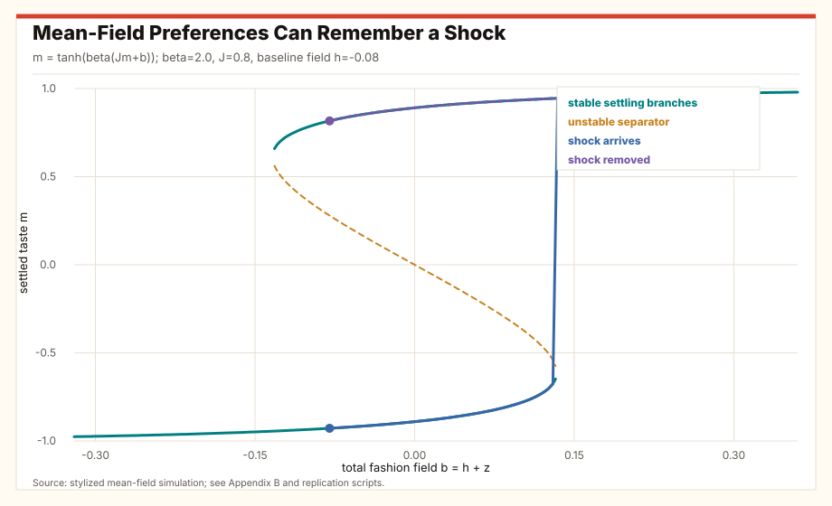
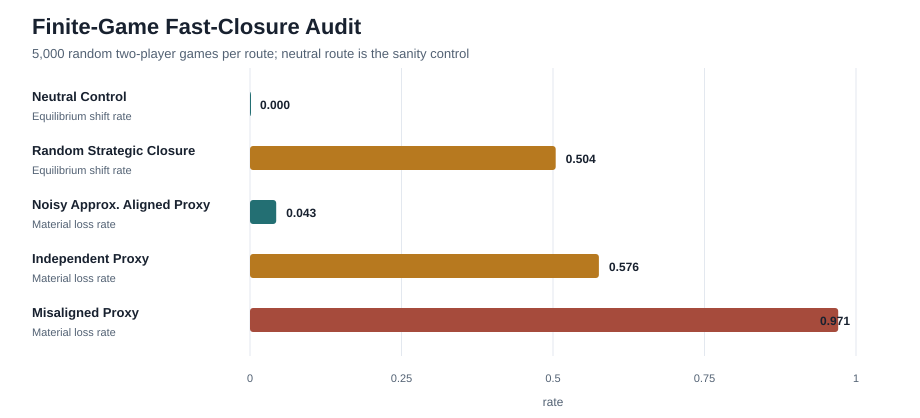
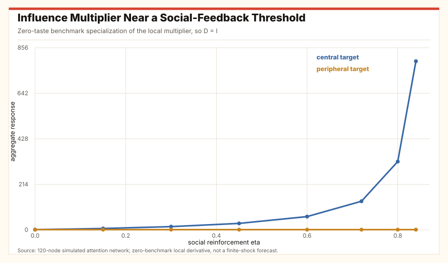
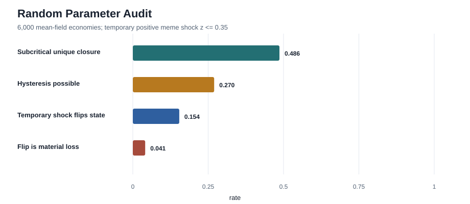
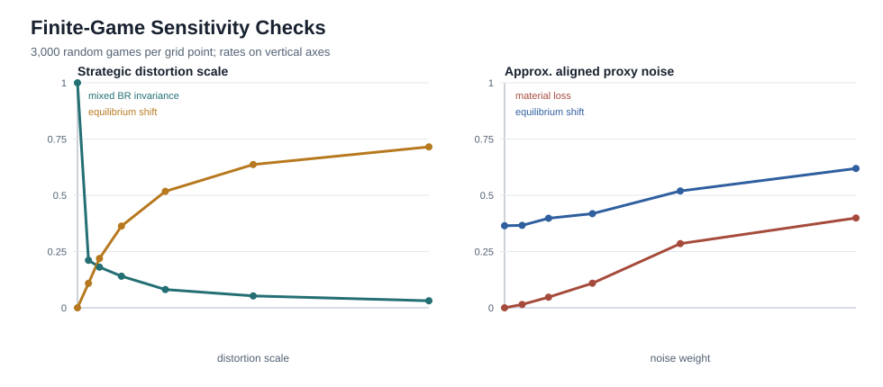

Fast Preference Closure and Fitness Wedges
Endogenous utility, social feedback, AI-mediated taste formation, and the separation between wanting, welfare, and survival
Abstract
Many contemporary puzzles have the same uncomfortable structure. People sincerely choose, endorse, or drift into patterns that appear to weaken ordinary material objectives: lower fertility in rich societies, loneliness amid constant connection, retreat from dating and sex, status games that consume attention, and digital environments that satisfy momentary wants while reducing health, friendship, or reproduction. Call this a preference-fitness wedge: what people sincerely want after preference formation diverges from the slower criterion being evaluated.
The model separates three objects that are often collapsed: the utility representation people maximize, the material or fitness criterion used to evaluate consequences, and the rule that forms preferences. Fitness is application-relative: reproduction in fertility examples, health and social capacity in loneliness examples, and continuity in institutional examples. A fast preference-formation process first produces the utility representation. Players then choose a Nash equilibrium in the induced subjective game. The central wedge is therefore not between "true" and "false" preferences; it is between the process that makes preferences feel locally compelling and the slower criteria by which lives, populations, and institutions persist.
Four facts organize the argument. First, after fast preference adjustment, equilibrium analysis is analysis of the reduced subjective game. Second, agreement with a material-payoff benchmark is guaranteed under a strong best-response invariance condition; without such invariance, agreement is not generally warranted. Third, if many initial preference states close to the same induced utility representation, selection over those initial states becomes weak, so closure laws, institutions, platforms, and environments become the relevant objects. Fourth, preference change is not automatically harmful. Material loss requires a proxy that selects preference-forming rules misaligned with the material evaluator.
Low fertility, loneliness, dating retreat, fashion cascades, and AI companionship can then be studied as possible preference-fitness wedges. AI sharpens both sides of the argument: it can close preferences around engagement and dependency, or it can scaffold goals users endorse outside the immediate choice moment. The policy question is not whether preferences change. It is which systems shape them, how quickly, by what proxy, and whether they build or erode the capacities that make human and institutional life continue.
1. Why Fast Preferences Matter
Economics usually earns its power by treating preferences as given. That move is often reasonable. If tastes change slowly, the analyst can study prices, constraints, games, and institutions while holding utility fixed. The welfare question can then be asked in the familiar way: given what people want, which allocations are efficient or desirable?
The time scale has changed. Social media, recommender systems, dating apps, creator markets, online status games, and now AI companions or assistants do not merely satisfy preferences. They can help produce the preferences that later appear in choice data. They can do so quickly, experimentally, and at population scale. Once that is true, revealed preference becomes an output of a system rather than a primitive of the system.
The novelty is not the claim that preferences are endogenous. That claim has a long tradition. The novelty is the fast-limit question: if preference formation is much faster than the economic, demographic, or institutional process being evaluated, what survives equilibrium analysis, what can selection still act on, and when does revealed utility cease to be a reliable guide to the material criterion?
The issue matters because some of the most visible social trends look like preferences moving away from old fitness and welfare anchors. Fertility has fallen across most OECD countries; the OECD reports that the average total fertility rate fell from 3.3 children per woman in 1960 to 1.5 in 2022. Ueda et al. (2020) find that sexual inactivity increased among young US adults from 2000 to 2018, especially among younger men. The US Surgeon General's advisory treats loneliness and isolation as major health risks. None of these facts has a single cause, and none should be reduced to a moral panic about technology. But together they raise a mathematical question: how can a society contain many sincere, utility-maximizing choices that do not reproduce the society, thicken friendship, or preserve health?
Fast preference change also creates a positive possibility. If preferences can be shaped quickly, then beneficial preference scaffolding is possible. AI could help people practice goals they endorse on reflection: sleep, exercise, friendship, craft, parenting readiness, sobriety, learning, reconciliation, or more honest romantic search. The danger is not preference change. The danger is preference change chosen by a proxy that rewards attention, dependency, status anxiety, or short-run comfort while ignoring the slower capacities people need to live well.
2. The Lens In Plain Language
There are three layers. The first is subjective utility: what a person or player maximizes at the moment of choice. The second is material value: the outside criterion, such as health, reproduction, friendship, wealth, learning, or institutional continuity. The third is the closure law: the process that makes a person settle into one utility representation rather than another.
In an ordinary model, utility sits at the beginning. Here, utility sits in the middle. Something forms it. Then it guides choice. Then the consequences are evaluated.
The three objects that must be kept separate.
| Object | Question it answers | Examples |
|---|---|---|
| Subjective utility | What feels worth choosing now? | Scrolling, avoiding rejection, pursuing status, joining a trend, talking to an AI companion, investing in a relationship. |
| Material or fitness value | What makes the person, group, or institution persist? | Health, fertility, durable friendship, household formation, skill accumulation, trust, solvency, civic continuity. |
| Closure law | What process makes the subjective utility settle where it does? | Social comparison, habit, recommender exposure, parental norms, peer status, AI coaching, AI companionship. |
A person can be perfectly consistent after closure. Once the preference state has settled, choosing according to it is ordinary optimization. Nash equilibrium also remains ordinary: it is still a consistency condition on choices. What changes is the game to which Nash equilibrium is applied. The game is no longer built from fixed primitive utility. It is built from utility produced by the closure process.
In words, the finite-game results are:
- Fast closure result: after fast preference adjustment, players optimize in the induced subjective game.
- Nash invariance result: the induced game is guaranteed to have the same Nash predictions as the material-payoff game under the strong sufficient condition that closure preserves every player's best responses.
- Selection result: if different initial tastes all close to the same final utility, selection over those initial tastes is weakened; analysis must then examine the closure laws, platforms, institutions, or environments that form tastes.
- Proxy result: preference shaping is harmful relative to a criterion. If the proxy choosing the closure law is aligned with the material evaluator, it can help. If it is misaligned, it can produce stable, sincerely wanted losses.
The intellectual neighborhood is broad. Stigler and Becker showed how stable preferences can coexist with changing shadow prices, while Becker and Murphy model habit-like dynamics in rational addiction. Bowles, Bisin and Verdier, and Bernheim et al. study endogenous, transmitted, or chosen preferences. Dekel, Ely, and Yilankaya ask which preferences survive evolutionary selection. Recommender-system work studies preference manipulation, feedback loops, algorithmic confounding, and engagement incentives (Adomavicius et al.; Jiang et al.; Chaney, Stewart, and Engelhardt; Kleinberg, Mullainathan, and Raghavan). The fast-limit question is narrower: when preference formation is much faster than the rest of the economy, what remains invariant, what must be studied as a selected object, and how can revealed utility diverge from a chosen material evaluator?
3. Puzzles The Lens Clarifies
No single model substitutes for empirical demography, sociology, psychology, or medicine. The recurring candidate pattern is a fitness wedge: a locally attractive preference state is produced by a fast environment and then persists even when it weakens a slower material criterion.
Preference-fitness wedges in contemporary examples.
| Puzzle | Fast closure mechanism | Possible material criterion weakened | Mechanism |
|---|---|---|---|
| Low fertility | Status comparison, intensive parenting norms, career clocks, housing and education races. | Population replacement, kin networks, old-age support, institutional continuity. | Shows one mechanism by which childbearing can become locally dominated when population continuity is the evaluator. |
| Loneliness amid connection | Low-friction digital contact, avoidance of rejection, algorithmic entertainment, weakened offline practice. | Health, friendship, trust, resilience, civic association. | Separates momentary relief from the capacity to sustain embodied relationships. |
| Retreat from dating and sex | Digital substitutes, safety norms, pornography, games, dating-app discouragement, fear of reputational error. | Pair bonding, fertility, emotional development, household formation. | Shows how risk avoidance can be locally rational while reducing future opportunity and skill. |
| Status and appearance cascades | Lookmaxxing, cosmetic trends, influencer comparison, metrics that make rank salient. | Attention, self-respect, financial resources, mental health. | Models persistent branch selection: a temporary social shock can create a new stable taste state. |
| AI companions and assistants | Always-available empathy, memory, personalization, low rejection, behavioral coaching. | Can weaken or strengthen human relationships, self-regulation, and agency. | Identifies the design question: bridge to real capacities or replace them. |
Low fertility is a clean example if population continuity is the evaluator. The OECD emphasizes that fertility decisions depend on economic security, costs, norms, labor markets, family policy, and personal conditions. Work on family ideals and comparison motives argues that norms about parenting and parental status competition can push households toward higher investment per child and lower fertility (Aassve et al. 2024; Mahler, Tertilt, and Yum 2025). One candidate closure chain is: visible comparison raises the perceived standard of adequate parenting; another child becomes locally costly in utility; postponement or one-child choices become individually reasonable; from the standpoint of a population-continuity evaluator, replacement and kin-network density weaken; the new norm may then make the high-investment, low-fertility state easier to reproduce socially. This chain is testable; it is not asserted as the dominant empirical cause.
The loneliness puzzle has a different shape. Digital connection can provide comfort, entertainment, and community. It can also become a substitute for the awkward practice required to maintain human relationships. The Surgeon General's advisory defines social connection broadly, including the structure, function, and quality of relationships, and treats lacking connection as a serious health issue. One testable chain is: low-friction mediated contact reduces the immediate cost of solitude; solitary or semi-social routines become locally rewarding; offline practice may decay; future offline interaction becomes harder; the person may sincerely prefer the substitute even if health, friendship, and resilience decline. The empirical question is whether a digital or AI-mediated closure law builds human social capacity or closes preferences around less demanding substitutes.
The retreat from dating and sex is not just loneliness with different vocabulary. Ueda et al. (2020) document a decline in sexual activity among young adults, but no single technology cause is required for the mechanism. Dating involves rejection risk, ambiguity, embodied timing, reputational fear, app-market discouragement, and imperfect feedback. If pornography, games, parasocial intimacy, or low-risk online interaction become safer substitutes, lower dating effort can be locally optimal. If that effort reduction then erodes confidence, meeting opportunities, and relationship skill, the fast utility of avoidance can become self-confirming.
4. AI As Risk And Repair
AI can act as a personalized closure law. A recommender system chooses exposure. A companion system chooses tone, memory, empathy, and availability. A coaching system chooses prompts, reminders, and interpretations of a user's goals. These systems can shift what feels easy, meaningful, embarrassing, urgent, or rewarding.
The negative case is familiar: optimize engagement, and the system may discover content or interaction styles that the user repeatedly chooses but later regrets. Kleinberg, Mullainathan, and Raghavan formalize a related point: engagement can fail to track what users want when momentary choices are inconsistent with broader welfare. Recommender-system reviews and audits emphasize that recommendation can shape choices, concentration, diversity, and welfare (Calvano et al.; Jiang et al.; Chaney, Stewart, and Engelhardt). In fast-closure terms, the system may be changing the utility representation that generates the next revealed preference.
The positive case is just as important. If AI can shape preferences, it can help make fast utilities more reflective relative to a specified evaluator. A well-designed AI system could make the long-run object more salient at the moment of choice. It could help a lonely person practice initiating real contact, help a student begin the next hour of work, help a patient act on a prior sleep goal instead of scrolling, help a couple de-escalate conflict, or help a prospective parent navigate fear without romanticizing hardship. Companion-AI research already frames the design fork: replacement and deskilling are risks, but systems can also be designed to support human relationships, social motivation, and social skill (Malfacini 2025; De Freitas et al. 2024).
Two AI closure designs.
| Design target | Fast utility it creates | Likely long-run effect |
|---|---|---|
| Engagement closure | "Stay here; this is easier, safer, more stimulating, and always responsive." | Can increase dependency, isolation, sleep loss, status anxiety, and opportunity decay. |
| Scaffolding closure | "Use this interaction to become more capable outside the system." | Can build social skill, health, learning, reflection, and durable agency. |
This is why the proxy-alignment result matters. A change in preference is not a loss by definition. A changed equilibrium is not a loss by definition. The material claim requires a proxy statement. If the system selects interactions because they increase watch time, dependency, or subscription retention, the induced preferences may drift away from health, friendship, or family formation. If the system selects interactions because they advance a specified material evaluator, the same fast-preference technology can improve that evaluator.
Operationally, the difference is measurable. A scaffolding design should treat off-platform action as success, measure capacity rather than retention, support user-endorsed long-run goals, reduce dependency on the system, and regard exit into human relationships or ordinary competence as a good outcome. The evaluator should be grounded in reflective endorsement, revisable consent, and observable capacity gains, not merely in a designer's moralized objective. Engagement closure treats the next session as success. Scaffolding closure treats the user's expanded life outside the system as success.
5. The Social-Feedback Mechanism
The worked mechanism is social feedback. A taste becomes more attractive when it appears common, admired, safe, or high-status. This covers fashion in the ordinary sense, but also memes, body norms, ideological cascades, dating norms, parenting standards, and platform-mediated visibility. The mechanism connects to classic models of herd behavior, informational cascades, fashion cycles, threshold contagion, and social interactions (Granovetter; Banerjee; Bikhchandani, Hirshleifer, and Welch; Pesendorfer; Brock and Durlauf; Watts).
The mechanism has two regimes. Below a critical feedback threshold, exposure has a unique and reversible effect. A recommendation, influencer, or meme can move tastes, but when the shock disappears the preference state moves back. Above the threshold, the same kind of temporary exposure can move the system to a different stable branch. At that point the shock no longer needs to remain present. History has selected a new preference state.
This avoids an unhelpful binary. Many preference changes are ordinary learning or exploration. Some are persistent branch changes. The empirical question is which regime a given domain is in. Does exposure merely inform? Does it temporarily nudge? Or does it help select a new self-reinforcing taste equilibrium?
The same feedback field looks different across applications. Parenting standards can be the field in fertility, perceived rejection and status can be the field in dating, body norms can be the field in appearance cascades, and responsiveness cues can be the field in AI companionship. The empirical evaluator is supplied domain by domain.
6. Computational Audits
The computations are mechanism audits, not empirical estimates. They check whether the formal conditions are knife-edge or visible in simple simulations. Two results matter.
First, social feedback can turn a temporary exposure shock into a persistent preference state. In the mean-field example below, the shock does not need to remain present. It moves the system across a fold; once the system is in the high branch's basin, removing the shock does not restore the old taste state.

Second, the finite-game audit separates three questions that are often blurred. Fast closure can change Nash predictions; that change can be strategically irrelevant or material; and material loss depends on the proxy selecting the closure law. Random strategic closure often changes the reduced game, while a noisy but approximately aligned proxy produces much less material loss than independent or misaligned proxy choice.

The detailed tables, network multiplier audit, random-parameter audit, and sensitivity checks are collected in Appendix C. Fast utility can be perfectly coherent as utility and still fail a material evaluator; whether it does so depends on the closure law and the proxy that selects it.
7. What To Measure
The empirical tests are speed, alignment, and reversibility.
Do not force fast closure onto every domain. If preferences move slowly relative to the economic choice, reverse after exposure, or are shaped by a proxy aligned with the material evaluator, standard preference-as-given analysis may be adequate. Fast closure matters most when those checks fail.
The first research design is a speed test. If exposure changes stated values, attention, search, or habits only slowly, ordinary preference-as-given analysis may be adequate. If the movement occurs over days, weeks, or a few interaction cycles, the closure law itself becomes an economic object. Randomized exposure, platform rollouts, sudden recommendation changes, local outages, and cohort timing can all help estimate whether preferences move on the fast side of the relevant economic decision.
The second design is a reversibility test. A nudge that disappears when exposure disappears is different from a branch change that persists after the shock ends. Post-shock follow-up is therefore not a secondary detail; it is the key test of hysteresis. The same logic applies to AI companions or coaching systems: does the interaction leave the user more able to act outside the system, or more dependent on the system for the action to occur?
The third design is a proxy audit. For recommender systems and AI products, the empirical question is not only what users click, but what objective selected the experience that formed the next preference. Engagement, retention, stated satisfaction, reflected goals, health, friendship, and skill accumulation can point in different directions. The model suggests looking for preference-fitness wedges where these proxies disagree.
Diagnostics suggested by the model.
| Diagnostic | Empirical question | Why it matters |
|---|---|---|
| Preference speed | How quickly do stated values, attention, habits, and social norms move after exposure? | Fast movement makes closure analysis relevant. |
| Proxy alignment | Does the system optimize engagement, retention, stated satisfaction, reflected goals, health, or social capacity? | Preference change is harmful only relative to a criterion. |
| Substitution versus complementarity | Does digital or AI interaction replace human relationships or help people form them? | The same AI companion can be a bridge or a sink. |
| Hysteresis | After a shock ends, do preferences return, or does a new branch persist? | Persistent branch changes require different policy tools than reversible nudges. |
| Capacity effects | Does the closure law build skills and opportunities, or erode them? | Fitness often depends on capacities, not just current choices. |
8. Conclusion
People can be sincere, consistent, and locally utility-maximizing while the preference-formation environment moves utility away from slower survival and welfare criteria. That possibility is not a refutation of economics. It moves one object: utility is no longer only a primitive; it is also an endogenous state.
The result is not anti-technology. A system that shapes preferences can be destructive, neutral, or beneficial. It depends on the closure law and the proxy selecting it. AI may make the problem sharper because it can personalize preference formation in real time. It may also make the solution sharper because it can help people practice the goals they endorse outside the immediate choice moment.
The discipline is separation. Do not confuse subjective utility with material value. Do not confuse Nash equilibrium with welfare. Do not confuse preference change with harm. Do not confuse revealed preference with a primitive when the environment has just helped produce it. The diagnostic question is whether a case is ordinary choice under fixed preferences, reversible influence, persistent closure, or proxy-selected preference formation.
Appendix A. Formal Model And General Results
A.1 Primitives
There is a finite set of players \(N=\{1,\ldots,n\}\). Player \(i\) has a finite action set \(A_i\), and \(A=\prod_i A_i\). The slow economic environment is \(E\). A closure law is denoted by \(\ell\). Player \(i\)'s subjective utility is \(U_i(a;\theta_i,E,\ell)\), where \(\theta_i\) is the preference state used for choice. The material payoff or evaluator is \(\pi_i(a;E,\ell)\). The two payoff objects may coincide, but the model does not assume they do.
The preference state follows a fast dynamic. The dot denotes a derivative with respect to ordinary time, \(T_\theta>0\) is the preference-adjustment timescale, \(H\) is the fast vector field, and \(\zeta\) is a fast exposure or transition input.
During the fast adjustment, \(E\) and \(\ell\) are held fixed; \(\zeta\) is either fixed or specified as the fast input path. Let \(q\) be the initial preference state. The closure map is the selected post-adjustment preference state.
Write \(C_{i,\ell}(E,q,\zeta)\) for player \(i\)'s component of \(C_\ell(E,q,\zeta)\). The reduced subjective game is the finite game obtained after substituting the post-closure preference state into subjective utility.
In the unique-closure benchmark, \(\Gamma_\ell^\star(E)\) is shorthand for the same reduced subjective game with \(C_{i,\ell}(E,q,\zeta)=\theta_{i,\ell}^\star(E)\) for every player and every relevant initial state.
Fix \(E\), \(\ell\), and the relevant input \(\zeta\). In the unique-closure benchmark, suppose the fast preference dynamic has a unique globally attracting fixed point \(\theta_\ell^\star(E)\) on the relevant input class. Then, after the fast preference adjustment and in the limit \(T_\theta\to0\), equilibrium analysis at \((E,\ell)\) is represented by the reduced subjective game \(\Gamma_\ell^\star(E)\). More generally, if the fast limit from initial state \(q\) exists and equals \(C_\ell(E,q,\zeta)\), equilibrium analysis for that closure experiment is represented by \(\Gamma_{\ell,q,\zeta}^\star(E)\).
Proof. On the fast time \(s=t/T_\theta\), the preference subsystem is \(d\theta/ds=H(\theta;E,\ell,\zeta)\). Under unique closure, every initial state in the relevant basin converges to \(\theta_\ell^\star(E)\). Thus the payoff table used for play converges pointwise to \(U_i(\cdot;\theta_{i,\ell}^\star(E),E,\ell)\) for every player. Because action sets are finite, the limiting finite game is well defined. The branch-selected case is identical with \(C_\ell(E,q,\zeta)\) replacing \(\theta_\ell^\star(E)\).
A.2 Nash Invariance
Let \(X_i=\Delta(A_i)\) be player \(i\)'s mixed-strategy simplex and \(X=\prod_iX_i\). For \(x=(x_i,x_{-i})\), write \(x(a)=\prod_jx_j(a_j)\). The expected subjective and material payoffs are:
For compact notation, this subsection writes the unique-closure case using \(\theta_{i,\ell}^\star(E)\). In a branch-selected experiment, replace \(\theta_{i,\ell}^\star(E)\) everywhere by the realized closure component \(C_{i,\ell}(E,q,\zeta)\). The best-response argument is unchanged once the realized reduced game is fixed.
The material benchmark game uses the same players and actions, but evaluates play by \(\pi_i\) rather than post-closure subjective utility. For any finite game \(\Gamma\), let \(NE(\Gamma)\) denote its mixed Nash equilibrium set.
Define subjective and material best-response correspondences by maximizing these expected payoffs over \(X_i\).
If \(BR_{i,\ell}^\star(x_{-i};E)=BR_{i,\ell}^\pi(x_{-i};E)\) for every player \(i\) and every mixed opponent profile \(x_{-i}\in X_{-i}\), then the subjective reduced game and the material benchmark game have the same mixed Nash equilibrium set. For a fixed game, the condition is sufficient but not necessary.
Proof. A mixed Nash equilibrium is exactly a fixed point of the players' best-response correspondences. If every player's subjective and material best-response correspondences are equal at every opponent mixed profile, the two fixed-point sets are identical.
Suppose that for every player \(i\) there exist \(\beta_i>0\) and \(\alpha_i(a_{-i};E,\ell)\), independent of \(a_i\), such that
Then the subjective and material mixed Nash sets coincide.
Proof. For fixed \(x_{-i}\), the expected \(\alpha_i\) term is constant in \(x_i\). Multiplication by \(\beta_i>0\) preserves the ordering of all own mixed strategies. Therefore subjective and material best responses coincide everywhere, and Proposition 1 applies.
If for some player \(i\), actions \(a_i,b_i\), and opponent mixed profile \(x_{-i}\), action \(a_i\) is the unique material best response while \(b_i\ne a_i\) is the unique subjective best response, then mixed best-response invariance fails. Nash sets may still coincide in special games, but the strong invariance test fails.
Proof. At the same opponent mixed profile, the two best-response correspondences are distinct singleton sets.
Let two players each choose \(A\) or \(B\). For both players and every opponent action, material payoff satisfies \(\pi_i(A,a_{-i})=1\) and \(\pi_i(B,a_{-i})=0\). Subjective post-closure payoff reverses the ranking: \(U_i(A,a_{-i})=0\) and \(U_i(B,a_{-i})=1\). Then \((A,A)\) is the unique material Nash equilibrium and \((B,B)\) is the unique subjective Nash equilibrium.
A.3 Selection And Proxy Choice
Two initial preference states are closure-equivalent at \((E,\ell,\zeta)\) if they induce the same closed preference state.
An admissible post-closure selection rule observes an initial preference state only through the reduced subjective game, the selected Nash set, the material evaluator, and the slow environment. Formally, write:
Fix \(E\), \(\ell\), and \(\zeta\). If \(q\sim_{E,\ell,\zeta}q'\), then the two initial states induce the same reduced subjective game and the same Nash set. Consequently, every admissible post-closure selection rule \(S\) is constant on each closure-equivalence class. Under common unique closure, selection over initial preference states is degenerate in the \(T_\theta\to0\) limit.
Proof. Closure equivalence gives the same closed preference state, hence the same subjective payoff table and reduced game. Any post-closure admissible selection rule receives the same argument for \(q\) and \(q'\), so it gives the same value.
For institutional choice, let a rule \(r\in\mathcal R\) induce a closed preference state, a reduced subjective game, selected play, a platform proxy \(V(r)\), and a material evaluator \(G(r)\). A platform chooses \(r^V\in\arg\max_{\mathcal R}V(r)\), while a material planner would choose \(r^G\in\arg\max_{\mathcal R}G(r)\).
For a fixed feasible set \(\mathcal R\), if \(\arg\max_{r\in\mathcal R}V(r)\subseteq\arg\max_{r\in\mathcal R}G(r)\), then every proxy-maximizing rule attains the feasible maximum of the material evaluator. Conversely, if there exist \(r_1,r_2\in\mathcal R\) with \(V(r_1)>V(r_2)\) and \(G(r_1)<G(r_2)\), then on the feasible set \(\{r_1,r_2\}\), proxy maximization selects a materially inferior closure law.
Proof. The first claim follows directly from the inclusion of maximizer sets. The converse is the two-rule feasible set construction.
Appendix B. Social-Feedback Closure
There are \(n\) agents with settled taste intensities \(m_i\in[-1,1]\). The baseline field is \(h_i\), the nonnegative attention matrix is \(W\), social reinforcement is \(\eta\), responsiveness is \(\beta\), a temporary exposure field is \(z\), and exposure loading is \(\phi_i\). The fast social-feedback closure law is:
If \(\beta\eta\rho(W)<1\), where \(\rho(W)\) is the spectral radius of \(W\), then the network social-feedback closure has a unique settled taste state. Small changes in \(z\) move that state continuously. When \(z\) is removed, the closure law itself has no hysteresis.
Proof. The right-hand side fixed-point map is a contraction in a weighted sup norm under the spectral-radius condition. Banach's fixed-point theorem gives a unique fixed point and continuous dependence on \(z\). Hysteresis requires multiple stable branches, which contraction excludes.
At a stable fixed point \(m^\star\), define \(D=\operatorname{diag}(1-(m_i^\star)^2)\). Differentiating the fixed-point equation with respect to the exposure field gives the local multiplier:
If \(I-\beta\eta DW\) is invertible, the local response of settled preferences to a small exposure field is given by the multiplier above. As \(\beta\eta\rho(DW)\) approaches one from below, the response can become large and concentrated along central attention directions to which \(D\phi\) has nonzero projection.
Proof. Differentiate \(m=F(m,z)\) with respect to \(z\) and rearrange. The inverse becomes large as the relevant eigenvalue of \(\beta\eta DW\) approaches one from below.
The mean-field case sets all agents equal. Let \(m\) be average taste, \(J\) average reinforcement, and \(b=h+z\) the total field.
If \(\beta J>1\), define the fold, or spinodal, taste level \(m_s\) and critical field \(B_c\) by:
If \(\beta J>1\), then for every total field \(b\) with \(|b|<B_c\), the mean-field closure has two stable taste states separated by an unstable state. Starting on the low branch, a temporary positive shock that pushes \(b\) strictly above \(B_c\) eliminates that branch. If the shock is held long enough on the fast time scale for the state to enter the high branch's post-shock basin, and if the shock is then removed while the baseline field lies inside \((-B_c,B_c)\), the path remains on the high branch.
Proof. Folds occur where the mean-field fixed-point curve is tangent to the forty-five-degree line. The tangency condition gives \(\beta J(1-m_s^2)=1\), and substitution gives \(B_c\). A shock past the fold removes the low branch. If the state evolves long enough under the shocked field to enter the basin that maps to the high branch after removal, the high branch remains stable inside the hysteresis window.
Using the simple material evaluator \(G(m)=hm\), persistent material loss is possible when the baseline field favors the low branch and a temporary shock can cross the upper fold.
If the persistent-loss window holds, \(h<0\), and the initial condition is on the low stable branch, then any temporary positive exposure shock \(z\in(B_c-h,z_{\max})\) can move the system to the high stable branch when held long enough on the fast time scale. After the shock disappears, the new taste state persists along that path and lowers \(G\).
Proof. The inequalities put the baseline inside the hysteresis window and allow a shock to cross the upper critical field. The fast-time holding condition gives the basin transition described in Proposition 7. When \(h<0\), the material evaluator ranks lower \(m\) above higher \(m\). The shock path ends on the high branch, so it lowers \(G\) relative to the initial low branch.
Appendix C. Numerical Details
The computations are illustrative mechanism checks. They use a single figure palette throughout: teal marks stability, invariance, or alignment; red marks material loss; blue marks exposure or equilibrium movement; amber marks comparison cases, instability, or strategic distortion; violet marks return paths after shock removal.
Replication entry points are scripts/run_fashion_meme_analysis.py, scripts/run_model_selection_audit.py, and scripts/run_model_selection_sensitivity.py. The figures and tables read by this article are stored under results/figures and results/tables. The audits are stress tests of the mechanisms, not estimates of a real platform or population.
C.1 Network Influence Multiplier
The network audit evaluates the local-influence multiplier from Appendix B. It uses a 120-node attention network in which each agent follows 8 others, with popularity weights drawn from a Pareto distribution with shape 1.35 and seed 20260623. The responsiveness parameter is \(\beta=1.15\), and \(\eta\) varies over the grid shown below. The numbers are local derivatives around a benchmark, not predicted bounded changes in taste from a large intervention.

Local network influence multipliers.
| Social reinforcement \(\eta\) | \(\beta\eta\rho(W)\) | Central response | Peripheral response | Ratio |
|---|---|---|---|---|
| 0.60 | 0.6900 | 62.5018 | 1.1627 | 53.7580 |
| 0.72 | 0.8280 | 134.6366 | 1.1659 | 115.4749 |
| 0.80 | 0.9200 | 321.1234 | 1.1697 | 274.5388 |
| 0.84 | 0.9660 | 792.8966 | 1.1758 | 674.3661 |
C.2 Mean-Field Flip
The mean-field calibration used in the main-text hysteresis figure is deliberately simple. It is meant to show the branch-selection logic, not to estimate a specific social domain. The random-parameter audit uses seed 20260623 and draws 6,000 economies with \(\beta\sim U[0.5,3.0]\), \(J\sim U[0.1,1.3]\), and \(h\sim U[-0.35,0.35]\). A positive shock of at most 0.35 is then tested against the fold condition.
Calibrated mean-field flip.
| Quantity | Value | Plain meaning |
|---|---|---|
| \(\beta J\) | 1.6000 | Above the critical value one. |
| \(B_c\) | 0.1335 | Critical total field needed to destroy one branch. |
| Shock needed | 0.2135 | Positive shock required from baseline \(h=-0.08\). |
| Shock tested | 0.3500 | Large enough to flip the state. |
| Low branch at baseline | -0.9282 | Initial settled taste state. |
| High branch at baseline | 0.8166 | Persistent settled taste state after shock removal. |

C.3 Finite-Game Diagnostics
The finite-game audit separates best-response preservation from proxy alignment. It uses seed 20260620 and 5,000 random two-player, two-action games per route, with material payoff entries drawn independently from \(U[-1,1]\). The neutral route adds only opponent-action terms that preserve best responses; the random strategic route adds independent payoff distortions. For proxy routes, each feasible closure intensity is \(\lambda\in\{0,0.25,0.75,1.5,3.0\}\). The platform selects the intensity with the highest proxy payoff; the material benchmark selects the intensity with the highest material payoff. A selected-outcome shift is counted when the distance between selected outcome distributions exceeds 0.25. For \(N=5{,}000\), the largest possible binomial Monte Carlo standard error is about 0.0071.
Best-response diagnostics.
| Route | Mixed BR | Endpoint BR | Outcome shift |
|---|---|---|---|
| Neutral control | 1.0000 | 1.0000 | 0.0000 |
| Random strategic closure | 0.0762 | 0.3126 | 0.5044 |
Proxy-choice diagnostics.
| Route | Outcome shift | Proxy-choice material loss |
|---|---|---|
| Noisy approximately aligned proxy | 0.3766 | 0.0432 |
| Proxy independent of material welfare | 0.7244 | 0.5758 |
| Proxy misaligned with material welfare | 0.9730 | 0.9706 |

References
Adomavicius, Gediminas, Jesse C. Bockstedt, Shawn P. Curley, and Jingjing Zhang. "Do Recommender Systems Manipulate Consumer Preferences? A Study of Anchoring Effects." Information Systems Research 24(4), 2013, 956-975. Record.
Aassve, Arnstein, Alicia Adsera, Paul Y. Chang, Letizia Mencarini, Hyunjoon Park, Chen Peng, Samuel Plach, James M. Raymo, Senhu Wang, and Wei-Jun Jean Yeung. "Family Ideals in an Era of Low Fertility." Proceedings of the National Academy of Sciences, 2024. Record.
Calvano, Emilio, Giacomo Calzolari, Vincenzo Denicolo, and Sergio Pastorello. "Artificial Intelligence Recommendations: Evidence, Issues, and Policy." Oxford Review of Economic Policy 40(4), 2024, 843-853. Published 2025. Record.
Malfacini, Kim. "The Impacts of Companion AI on Human Relationships: Risks, Benefits, and Design Considerations." AI & Society 40, 2025, 5527-5540. Record.
Banerjee, Abhijit V. "A Simple Model of Herd Behavior." Quarterly Journal of Economics 107(3), 1992, 797-817. Record.
Becker, Gary S., and Kevin M. Murphy. "A Theory of Rational Addiction." Journal of Political Economy 96(4), 1988, 675-700. Record.
Bernheim, B. Douglas, Luca Braghieri, Alejandro Martinez-Marquina, and David Zuckerman. "A Theory of Chosen Preferences." American Economic Review 111(2), 2021, 720-754. Record.
Bikhchandani, Sushil, David Hirshleifer, and Ivo Welch. "A Theory of Fads, Fashion, Custom, and Cultural Change as Informational Cascades." Journal of Political Economy 100(5), 1992, 992-1026. PDF.
Bisin, Alberto, and Thierry Verdier. "The Economics of Cultural Transmission and Socialization." NBER Working Paper 16512, 2010. Record.
Bowles, Samuel. "Endogenous Preferences: The Cultural Consequences of Markets and Other Economic Institutions." Journal of Economic Literature 36(1), 1998, 75-111. Record.
Brock, William A., and Steven N. Durlauf. "Discrete Choice with Social Interactions." Review of Economic Studies 68(2), 2001, 235-260. Record.
Chaney, Allison J. B., Brandon M. Stewart, and Barbara E. Engelhardt. "How Algorithmic Confounding in Recommendation Systems Increases Homogeneity and Decreases Utility." RecSys, 2018. arXiv.
Dekel, Eddie, Jeffrey C. Ely, and Okan Yilankaya. "Evolution of Preferences." Review of Economic Studies 74(3), 2007, 685-704. PDF.
De Freitas, Julian, Ahmet K. Uguralp, Zeliha O. Uguralp, and Stefano Puntoni. "AI Companions Reduce Loneliness." Harvard Business School Working Paper 24-078, 2024. PDF.
Granovetter, Mark. "Threshold Models of Collective Behavior." American Journal of Sociology 83(6), 1978, 1420-1443. Record.
Jiang, Ray, Silvia Chiappa, Tor Lattimore, Andras Gyorgy, and Pushmeet Kohli. "Degenerate Feedback Loops in Recommender Systems." AIES, 2019. arXiv.
Kleinberg, Jon, Sendhil Mullainathan, and Manish Raghavan. "The Challenge of Understanding What Users Want: Inconsistent Preferences and Engagement Optimization." Management Science 70(9), 2024, 6336-6355. arXiv.
Mahler, Lukas, Michele Tertilt, and Minchul Yum. "Policy Concerns in an Era of Low Fertility: The Role of Social Comparisons." 2025. PDF.
OECD. "Fertility Trends Across the OECD: Underlying Drivers and the Role for Policy." Society at a Glance 2024. Report.
Pesendorfer, Wolfgang. "Design Innovation and Fashion Cycles." American Economic Review 85(4), 1995, 771-792. Record.
Office of the Surgeon General. "Our Epidemic of Loneliness and Isolation: The U.S. Surgeon General's Advisory on the Healing Effects of Social Connection and Community." US Department of Health and Human Services, 2023. NCBI Bookshelf.
Stigler, George J., and Gary S. Becker. "De Gustibus Non Est Disputandum." American Economic Review 67(2), 1977, 76-90. Record.
Ueda, Peter, Catherine H. Mercer, Cyrus Ghaznavi, and Debby Herbenick. "Trends in Frequency of Sexual Activity and Number of Sexual Partners Among Adults Aged 18 to 44 Years in the US, 2000-2018." JAMA Network Open 3(6), 2020, e203833. Record.
Watts, Duncan J. "A Simple Model of Global Cascades on Random Networks." Proceedings of the National Academy of Sciences 99(9), 2002, 5766-5771. Record.